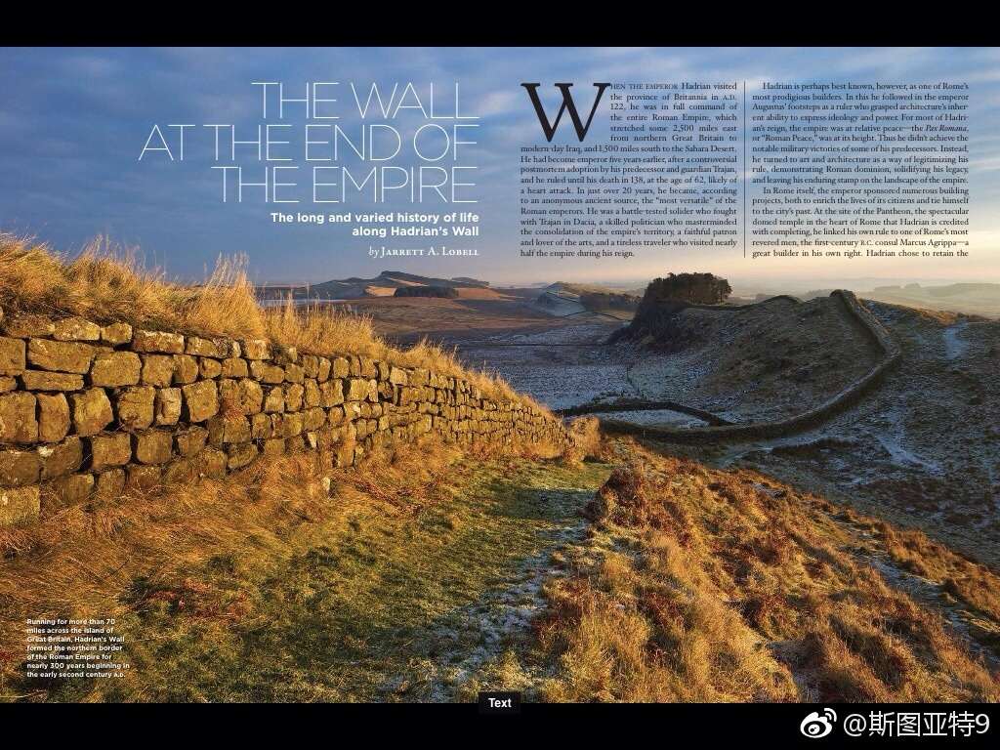
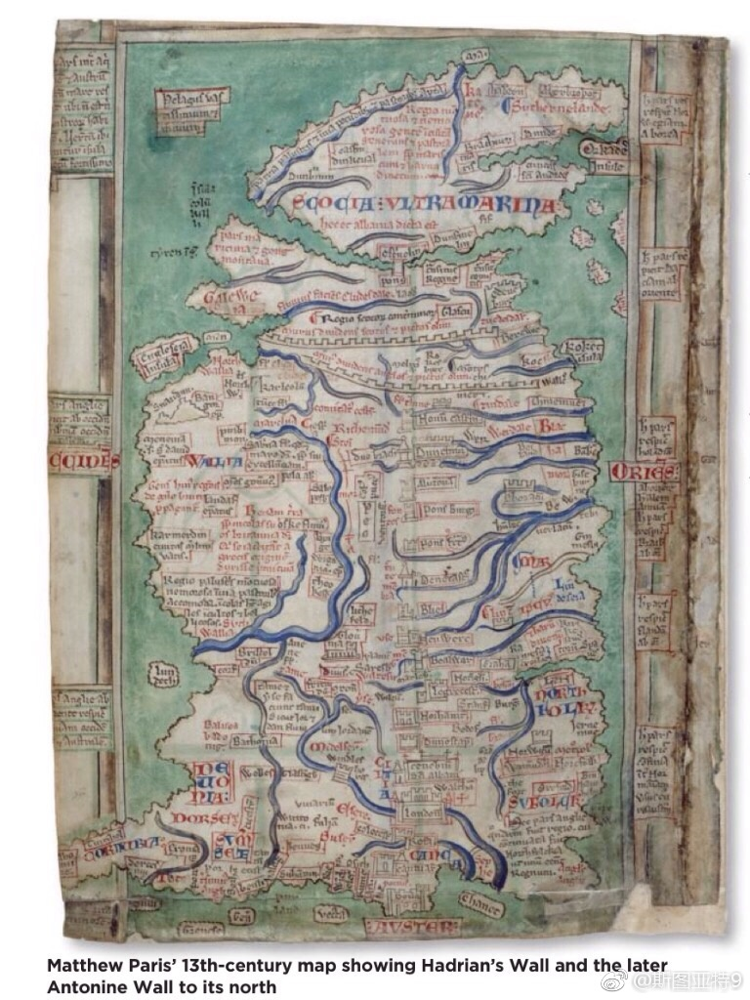
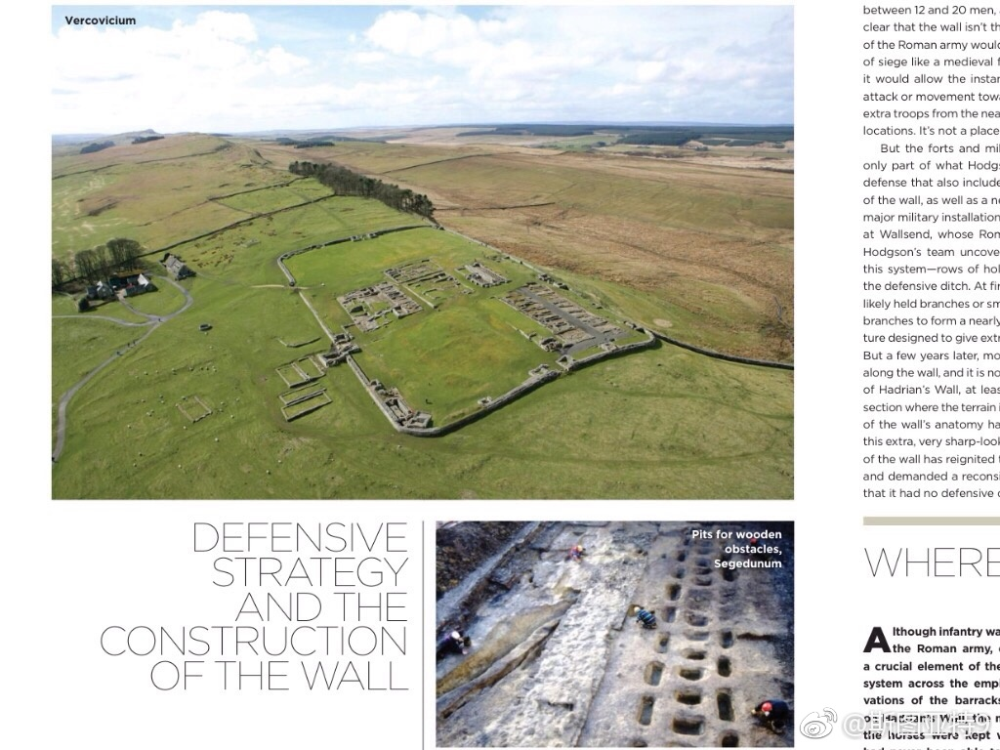
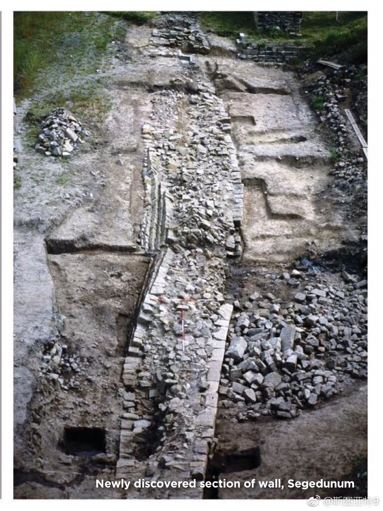

罗马帝国在英国建的长城。110多公里长，城墙大概5米多高，有的考古学家认为还要再高几米。两侧各有一道几米宽大概8米深的沟。沿长城大概有12个要塞。1万来自帝国各地的士兵守卫守卫这道长城。《权力的游戏》的"The Wall"的灵感是不是就是这里了？（图片截自《考古》杂志） 
开始看那个电视剧《The Young Pope》。感觉……他们真的不是在讲特朗普吗？真的不是吗？"They are beginning to realize who I am, because that is the enormous error they committed: they chose a pope they didn't know, and today they begin to understand."